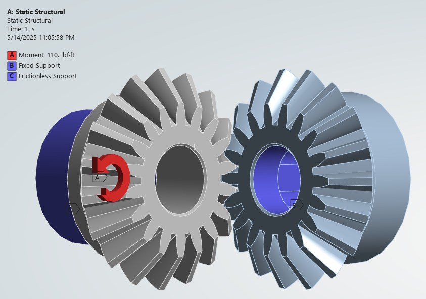
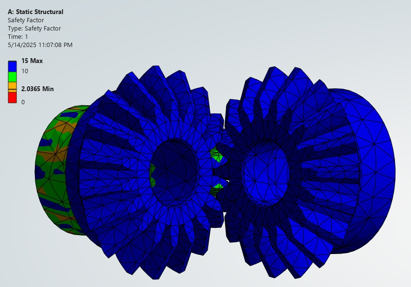
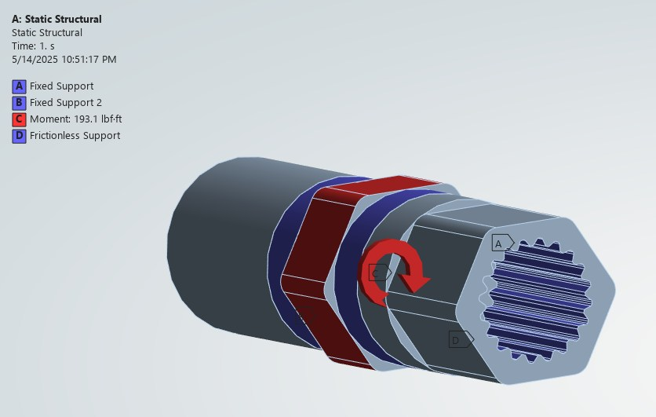
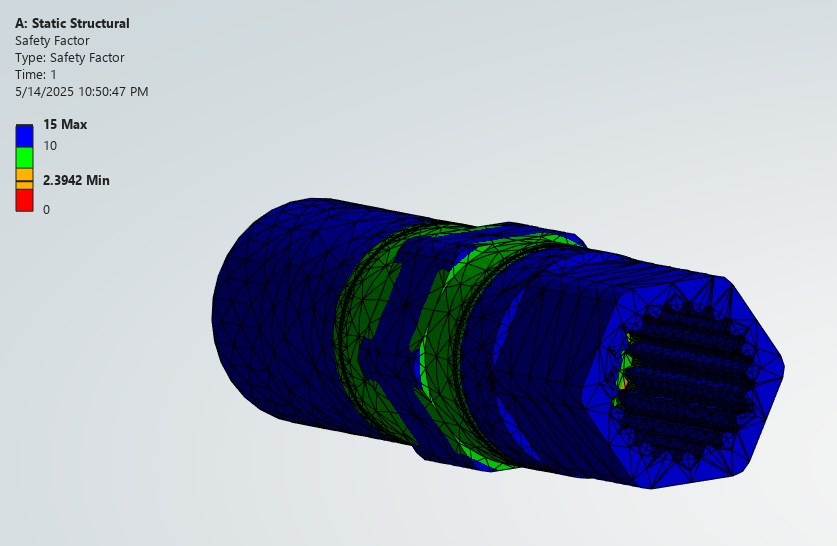
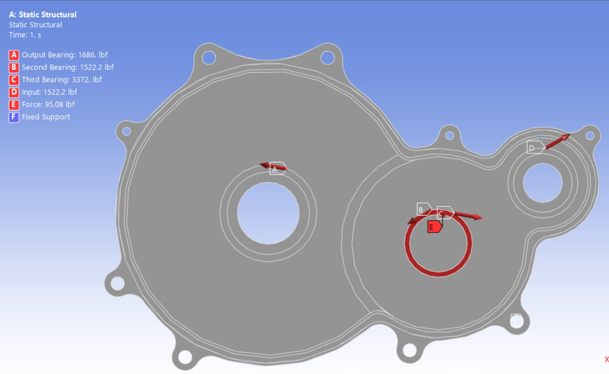
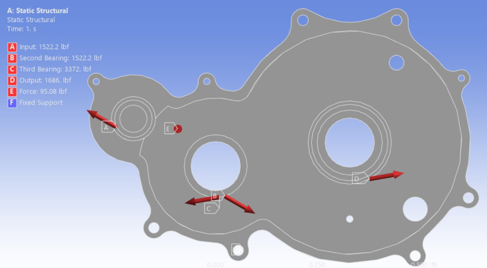
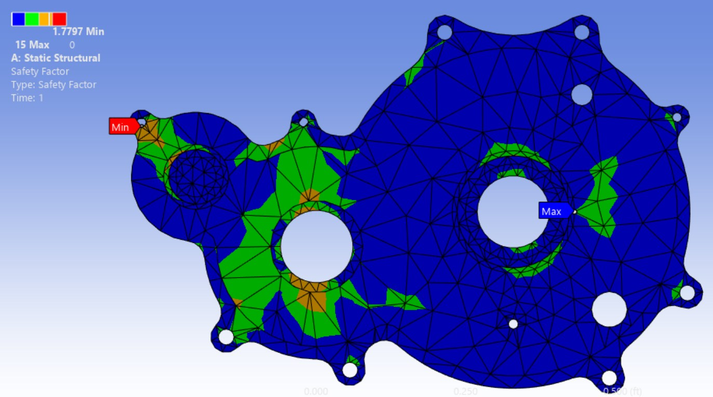
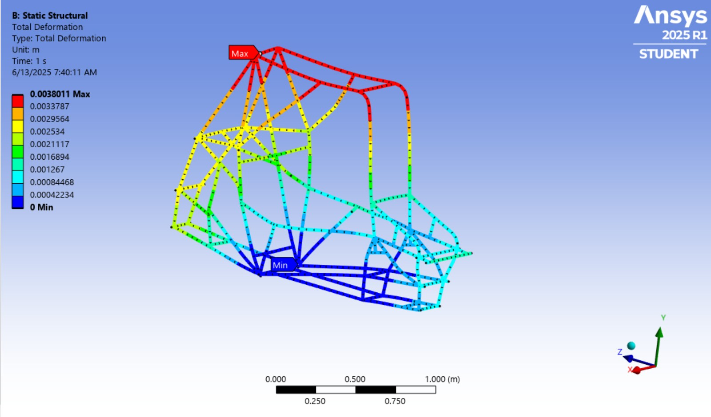
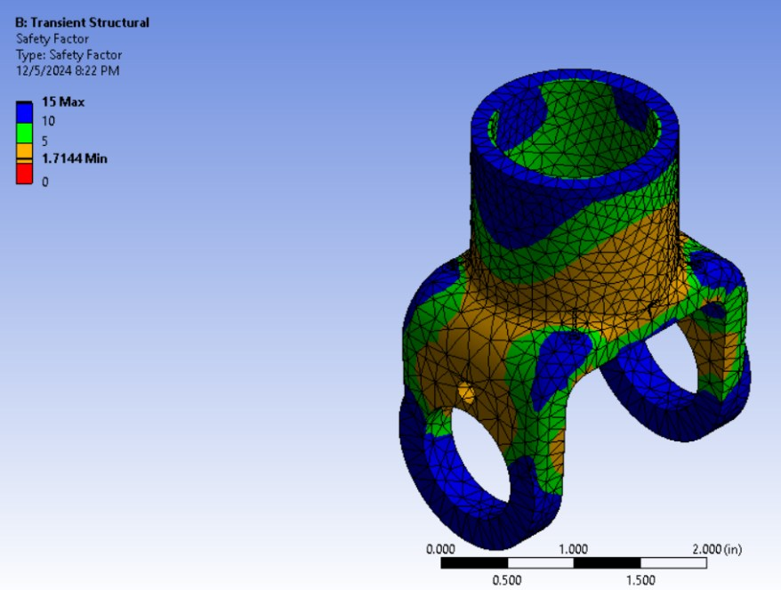

Project 02 — Baja SAE — Ansys Mechanical — 2024–2025
Baja Drivetrain & Chassis FEA
Five analyses of the parts that carry the load — gears, shaft, housing, frame, and yoke — with the drivetrain loads worked out in a gear calculator I built. And one failure the model did not predict.
- Solver
- Ansys Mechanical 2025 R2
- Drivetrain loads
- From a gear calculator I built
- Bevel gears
- 110 lbf·ft · min SF 2.04
- Spline coupling
- 193.1 lbf·ft · min SF 2.39
- Gearbox housing
- Bearing loads to 3,372 lbf · min SF 1.56 / 1.78
- Frame
- Frontal impact · 3.8 mm max deflection
- U-joint yoke
- Transient torsion, fatigue · min SF 1.71
Loads first
An FEA result is only as good as the load it is given. The drivetrain loads came from a gear calculator I built: 110 lbf·ft at the bevel gears, 193.1 lbf·ft at the splined coupling, and the bearing reactions on the gearbox housing, from 1,522.2 up to 3,372 lbf.
Bevel gears
A static structural model of the bevel gear pair at 110 lbf·ft, with fixed and frictionless supports, gave a minimum safety factor of 2.04.


The failure the model didn’t predict
On the car, the teeth sheared.
The analysis had covered normal operation, and for that load it predicted the gears would survive. The load that broke them was outside that case: the CVT slamming into engagement because of its ramp profile, shock-loading the teeth.
The model answered the question it was asked. The question was incomplete.
Splined shaft coupling
Static structural at 193.1 lbf·ft, with two fixed supports standing in for the bearings. Minimum safety factor 2.39, at the splined interface.


Gearbox housing
The housing’s job is stiffness: if the case deflects, the shafts move out of alignment and the gears stop meshing the way they were designed to. I applied the bearing loads from the gear calculator to both case halves — output 1,686 lbf, input and second bearing 1,522.2 lbf each, third bearing 3,372 lbf — plus a 95.08 lbf force.
Minimum safety factor 1.56 on the left case and 1.78 on the right.




Frame — frontal impact
A static frontal impact case on the tubular space frame, standing in for the car hitting a tree or another car. Maximum deflection was 3.8 mm, at the upper roll hoop, with the lower mounting points staying rigid.

U-joint yoke
The yoke has to survive repeated loading and unloading, so I ran it as a transient torsion case with the fatigue tool, and checked von Mises stress at the ears to make sure they would not fail under rotation. Minimum safety factor 1.71.
